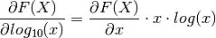

Cole-Cole decomposition conductivities¶
real and imaginary parts¶
![&= \sigma_\infty \left( 1 - \sum_k m_k \frac{1 + (\omega \tau)^c \cos
\frac{c \pi}{2} - j (\omega \tau)^c \sin \frac{c \pi}{2}}{1 + 2 (\omega
\tau)^c \cos \frac{c \pi}{2} + (\omega \tau)^{2 c}} \right)\\
&= \sigma_\infty \left( 1 - \sum_k m_k \frac{1 + (\omega \tau)^c \cos
\frac{c \pi}{2}}{1 + 2 (\omega
\tau)^c \cos \frac{c \pi}{2} + (\omega \tau)^{2 c}} \right) +
j \sigma_\infty \sum_k m_k \frac{(\omega \tau)^c \sin \frac{c \pi}{2}}{1 + 2 (\omega
\tau)^c \cos \frac{c \pi}{2} + (\omega \tau)^{2 c}}\\
\Rightarrow \sigma' &= \sigma_\infty \left( 1 - \sum_k m_k \frac{1 +
(\omega \tau)^c \cos \frac{c \pi}{2}}{1 + 2 (\omega \tau)^c \cos \frac{c
\pi}{2} + (\omega \tau)^{2 c}} \right)\\
\sigma'' &= j \sigma_\infty \sum_k m_k \frac{(\omega \tau)^c \sin
\frac{c \pi}{2}}{1 + 2 (\omega \tau)^c \cos \frac{c \pi}{2} + (\omega
\tau)^{2 c}}\\
m &= \frac{\sigma_\infty - \sigma_0}{\sigma_\infty}\\
\sigma_0 &= (1 - m) \cdot \sigma_\infty](_images/math/22d2dc7bcca1cf73bfe32e98fe77fab6875699b2.png)
partial derivatives¶
There are partial derivatives of the real and the imaginary part respect to all variables.
real parts¶
![\frac{\partial \hat{\sigma'}(\omega)}{\partial \sigma_\infty} &= 1 - \sum_k m_k \frac{1 +
(\omega \tau)^c \cos \frac{c \pi}{2}}{1 + 2 (\omega \tau)^c \cos \frac{c
\pi}{2} + (\omega \tau)^{2 c}}\\
\frac{\partial \hat{\sigma'}(\omega)}{\partial m_i} &= -\sigma_\infty \frac{1 +
(\omega \tau)^c \cos \frac{c \pi}{2}}{1 + 2 (\omega \tau)^c \cos \frac{c
\pi}{2} + (\omega \tau)^{2 c}}\\
\frac{\partial \hat{\sigma'}(\omega)}{\partial \tau_k} &=
\sigma_\infty m_k \left[
\frac{c \omega (\omega \tau)^{c - 1} \cos \frac{c \pi}{2}}
{1 + 2 (\omega \tau)^c \cos \frac{c \pi}{2} + (\omega \tau)^{2 c}} -
\frac{1 + (\omega \tau)^c \cos \frac{c \pi}{2}}
{\left[{1 + 2 (\omega \tau)^c \cos \frac{c \pi}{2} + (\omega \tau)^{2 c}} \right]^2} \cdot
\frac{2 c \omega (\omega \tau)^{c-1} \cos \frac{c \pi}{2} + (\omega \tau)^{2 c}}{1}
\right]\\
\frac{\partial \hat{\sigma'}(\omega)}{\partial c} &=
\sigma_\infty m_k \left[
\frac{\ln(\omega \tau) (\omega \tau)^{c} \sin \frac{c \pi}{2} + (\omega \tau)^c \cos \frac{c \pi}{2} \frac{\pi}{2}}
{1 + 2 (\omega \tau)^c \cos \frac{c \pi}{2} + (\omega \tau)^{2 c}} -
\frac{(\omega \tau)^c \sin \frac{c}{\pi}{2}}
{\left[{1 + 2 (\omega \tau)^c \cos \frac{c \pi}{2} + (\omega \tau)^{2 c}} \right]^2} \right. \cdot\\
& \left. \frac{2 \ln (\omega \tau) (\omega \tau)^c \cos \frac{c \pi}{2} - 2 (\omega \tau)^2 \frac{\pi}{2} \sin \frac{c \pi}{2} + 2 \ln(\omega \tau) (\omega \tau)^{2 c}}{1}
\right]](_images/math/9b22b6c67a572a2d49245c819b970e6d903d358b.png)
imaginary parts¶
![\frac{\partial \hat{\sigma}''(\omega)}{\partial \sigma_\infty} &= - \frac{m (\omega
\tau)^c \sin(\frac{c \pi}{2})}{1 + 2 (\omega \tau)^c \cos(\frac{c \pi}{2}) +
(\omega \tau)^{2 c}}\\
\frac{\partial \hat{\sigma''}(\omega)}{\partial m} &= - \sigma_\infty m (\omega
\tau)^c \frac{sin(\frac{c \pi}{2})}{1 + 2 (\omega \tau)^c \cos(\frac{c
\pi}{2}) + (\omega \tau)^{2 c}}\\
\frac{\partial \hat{\sigma''}(\omega)}{\partial \tau} &= \sigma_\infty \frac{-m
\omega^c c \tau^{c-1} \sin(\frac{c \pi}{2} }{1 + 2 (\omega \tau)^c
\cos(\frac{c \pi}{2}) + (\omega \tau)^{2 c}} +\\
&\sigma_0 \frac{\left[-m (\omega
\tau)^c \sin(\frac{c \pi}{2} \right] \cdot \left[ 2 \omega^c c \tau^{c-1}
\cos(\frac{c \pi}{2}) + 2 c \omega^{2 c} \tau^{2 c - 1}\right]}{\left[1 + 2
(\omega \tau)^c \cos(\frac{c \pi}{2}) + (\omega \tau)^{2 c}\right]^2}\\
\frac{\partial \hat{\sigma''}(\omega)}{\partial c} &= \sigma_0 \frac{-m
\sin(\frac{c \pi}{2}) \ln(\omega \tau)(\omega \tau)^c - m (\omega \tau)^c
\frac{\pi}{2} \cos(\frac{\pi}{2}}{1 + 2 (\omega \tau)^c \cos(\frac{c \pi}{2})
+ (\omega \tau)^{2 c}} +\\
&\sigma_0 \frac{\left[-m (\omega \tau)^c \cos(\frac{c
\pi}{2}) \right] \cdot \left[ -2 \ln(\omega \tau) (\omega \tau)^c
\cos(\frac{c \pi}{2}) + 2 (\omega \tau)^c \frac{\pi}{2} \cos(\frac{c
\pi}{2}) \right] + \left[2 \ln(\omega \tau) (\omega \tau)^{2
c}\right]}{\left[1 + 2 (\omega \tau)^c \cos(\frac{c \pi}{2}) + (\omega
\tau)^{2 c}\right]^2}](_images/math/b5de2c34c14c70141afd6abfc079a23b4b341817.png)
Partial derivatives respect to  :¶
:¶
There are also partial derivatives of the real and the imaginary part respect to the common logarithm of all variables:
